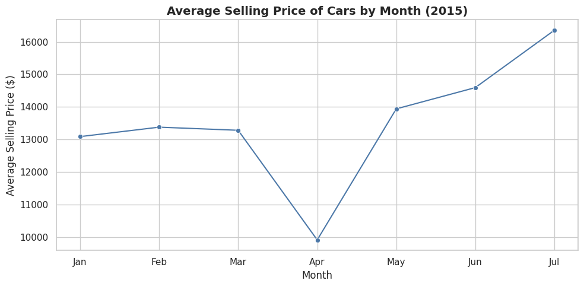
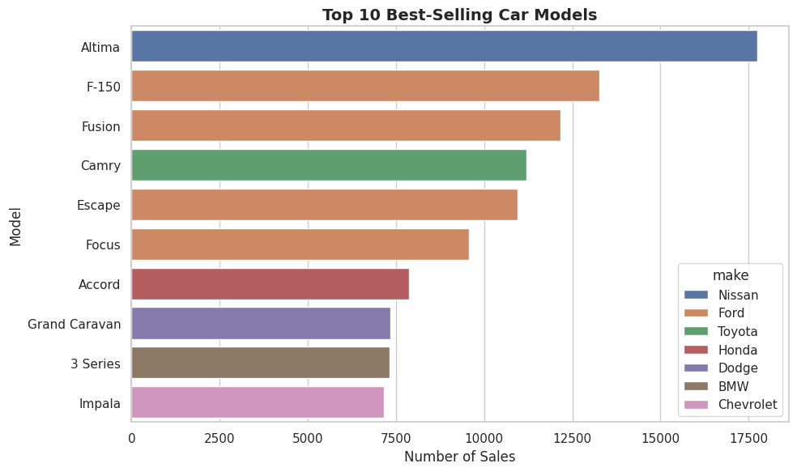
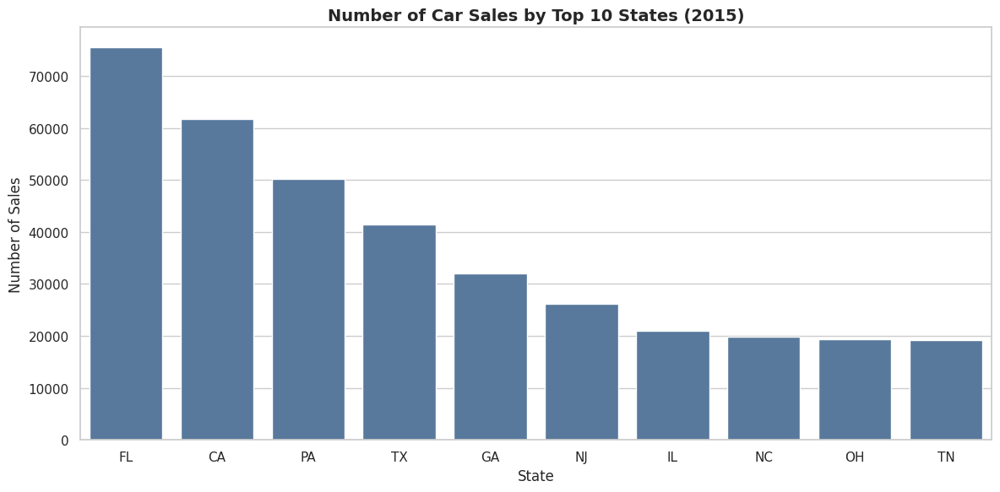
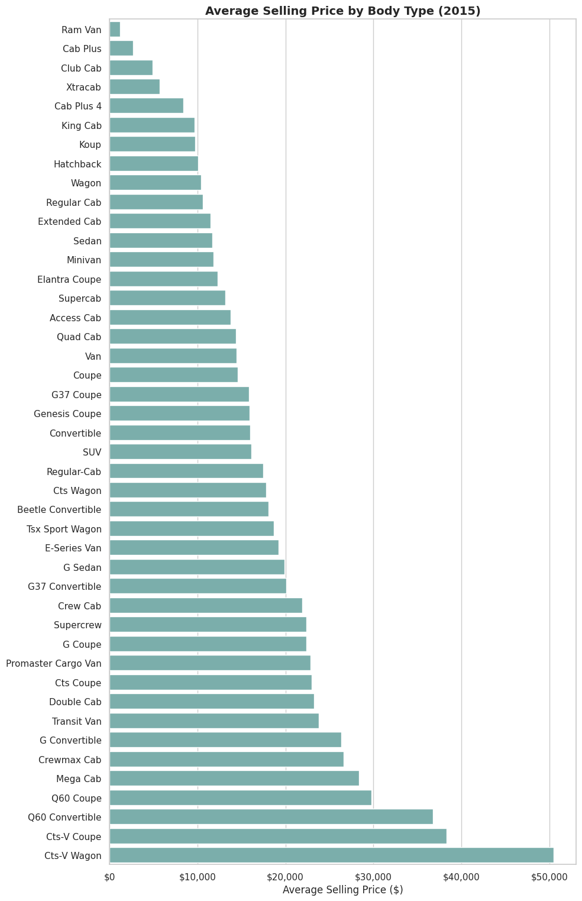

This project explores trends and pricing behavior in the U.S. used car market using
SQL for data preparation and Python for exploratory analysis and visualization.
The dataset includes vehicle-level attributes such as make, model, mileage,
condition, sale date, and selling price.
The objective is to understand how mileage, seasonality, geography, and vehicle
characteristics influence pricing and sales volume.
Business Questions
How do average selling prices change throughout the year?
Which car models account for the highest sales volume?
How does mileage impact both price and demand?
Which states record the highest number of vehicle sales?
How do prices vary across different body types?
Methodology
Filtered records to the 2015–2020 timeframe using SQL.
Cleaned missing values and standardized categorical fields.
Built aggregate tables for pricing and sales metrics.
Generated static visuals using Python (pandas, matplotlib).
-- Example SQL: Average price by body type
SELECT body_type,
ROUND(AVG(sellingprice), 2) AS avg_price,
COUNT(*) AS vehicles_sold
FROM car_sales_clean
GROUP BY body_type
ORDER BY avg_price DESC;
Results & Visuals
The following visuals highlight the most important pricing and sales patterns identified during the analysis.

Seasonality: Average selling prices dip in early spring and rise into summer,
indicating seasonal pricing behavior.

Demand leaders: Models such as the Nissan Altima and Ford F-150 rank among the highest in sales volume.
Mileage impact: Lower-mileage vehicles command higher prices, while higher-mileage vehicles make up most sales volume.

Regional demand: Florida, California, and Texas lead vehicle sales, reflecting large market size and demand.

Body type pricing: SUVs and performance-oriented body types tend to command higher resale prices.
Key Insights
Used vehicle prices exhibit clear seasonal trends throughout the year.
High-volume models dominate sales even when not priced at a premium.
Mileage strongly influences price, but higher mileage vehicles drive volume.
Regional differences reflect both population size and local demand patterns.
Body type plays a significant role in resale pricing.